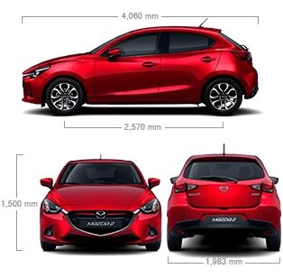
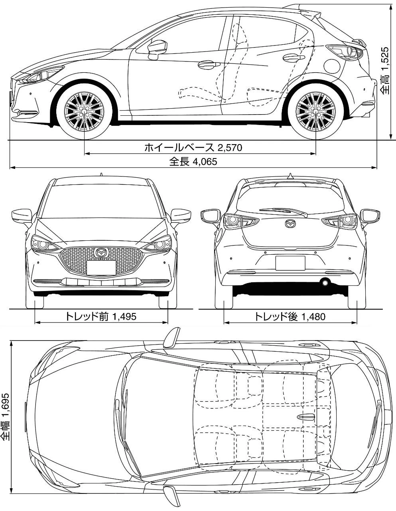

Mazda 2
Servisiramo sve generacije Mazde 2, od prvih MZI benzinaca do današnjih Skyactiv motora.
Servis za Mazda 2

Mazda 2 je gradski automobil koji vozači biraju zbog jednostavnosti i niskih troškova održavanja. Baš zato je važno da servis rade ljudi koji model dobro poznaju.
Kroz našu radionicu prošlo je više generacija Mazde 2, od benzinaca sa lancem razvoda do Skyactiv motora. Radimo redovan servis, dijagnostiku i popravke, uz pisani izveštaj o stanju vozila posle svake intervencije.

Generacije koje servisiramo
Radimo sve generacije modela Mazda 2 zastupljene na našem tržištu.
1. generacija (DY) · 2002–2007
Hečbek s pet vrata. Benzin: 1.25, 1.3, 1.4, 1.5 i 1.6. Dizel: 1.4 MZ-CDTi.
2. generacija (DE) · 2007–2014
Hečbek s tri i pet vrata i limuzina. Benzin: 1.3 i 1.5, kasnije 1.3 Skyactiv-G. Dizel: 1.4 i 1.6.
3. generacija (DJ) · 2014–danas
Hečbek s pet vrata i limuzina. Benzin: 1.3, 1.5 i 2.0 Skyactiv-G i 1.5 Skyactiv-Hybrid. Dizel: 1.5 Skyactiv-D (do 2019).
Na šta obraćamo pažnju
Tipične tačke održavanja i česti radovi kod ovog modela.
Lanac razvoda i paljenje
Kod benzinaca proveravamo zategnutost lanca razvoda i stanje bobina i svećica, jer neravnomeran rad motora najčešće počinje odatle.
Skyactiv-G i ubrizgavanje
Na Skyactiv benzincima pratimo rad ubrizgavanja i po potrebi čistimo usisni trakt i lambda sonde.
Kočnice i zadnja osovina
Gradska vožnja najviše troši kočnice; proveravamo diskove, pločice i ležajeve zadnje grede.
Klima i elektrika
Proveravamo punjenje klime, alternator i akumulator, česte tačke kod manjih gradskih automobila.